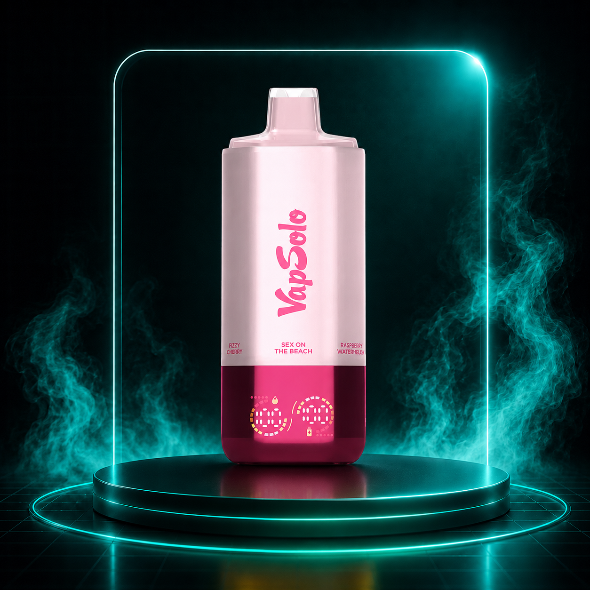
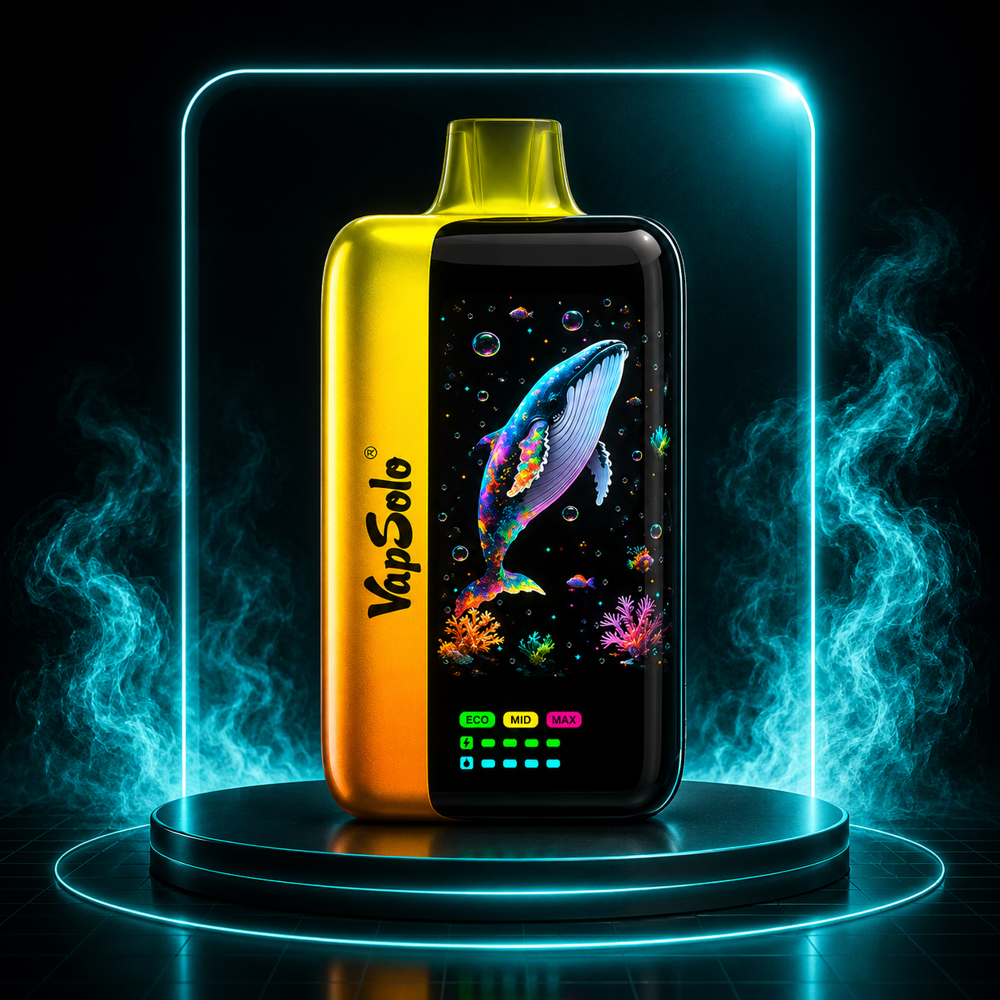
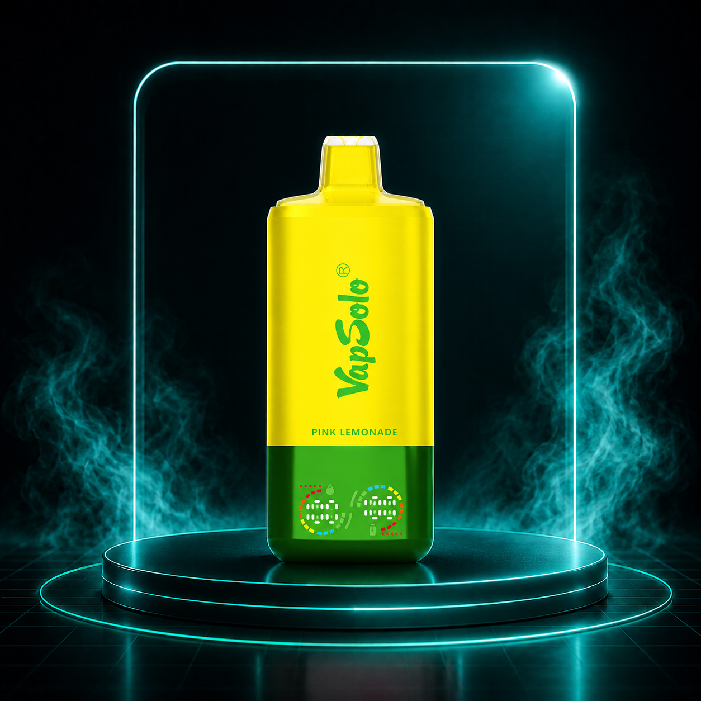
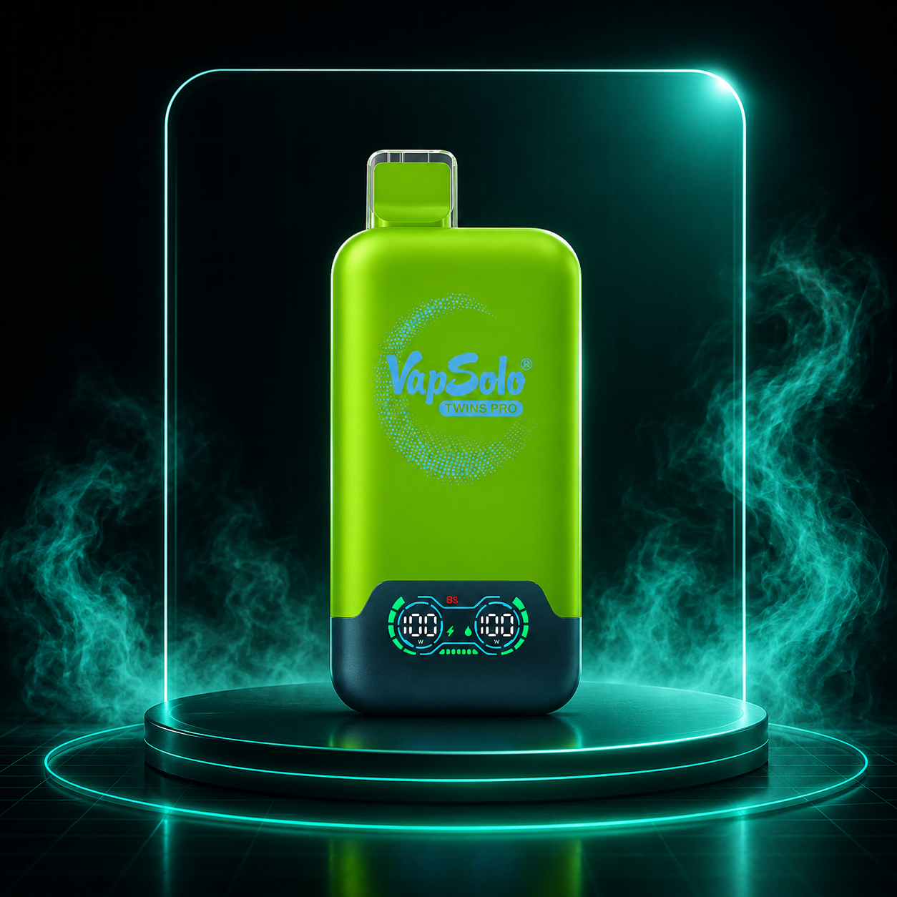
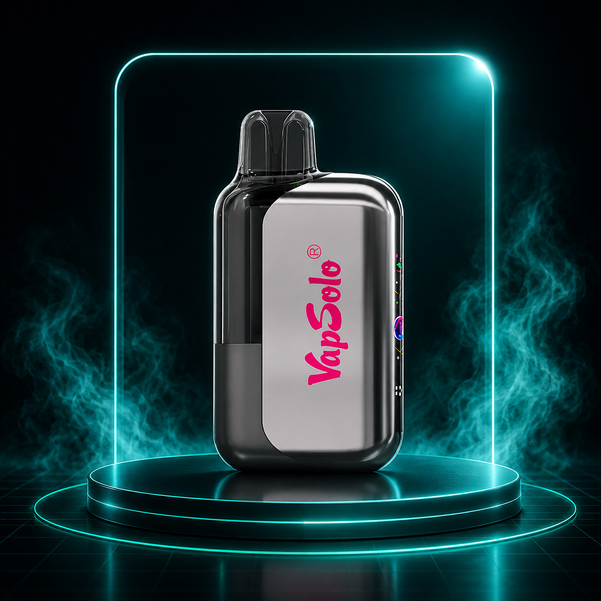
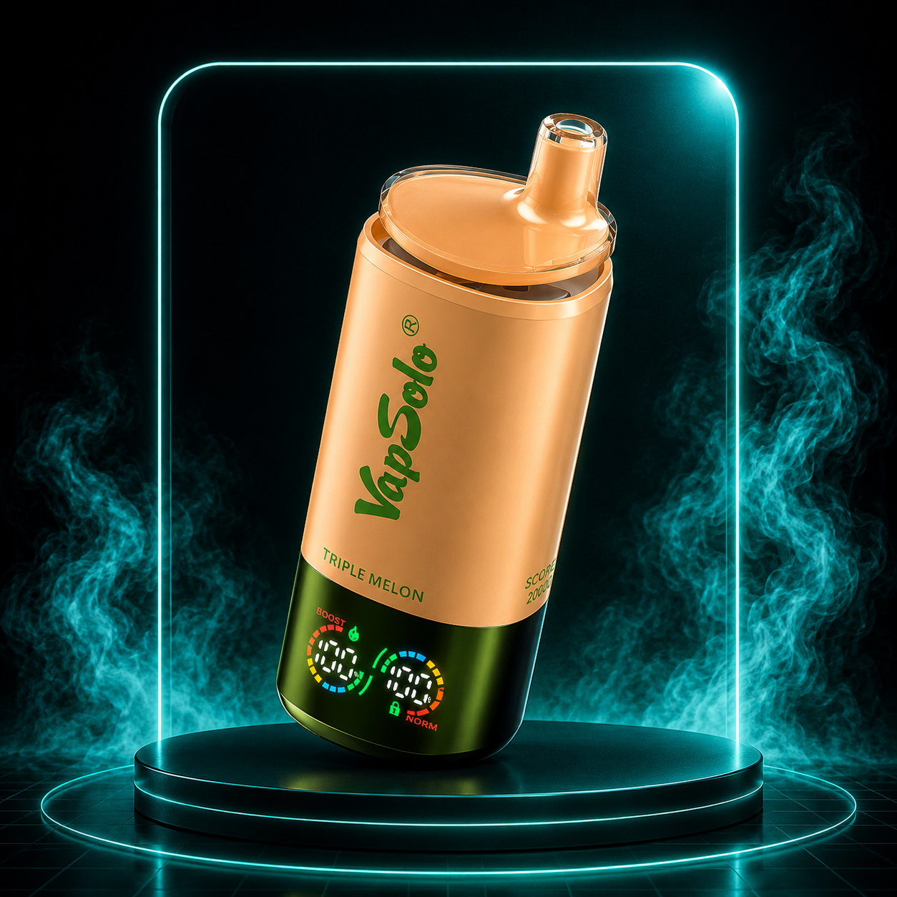
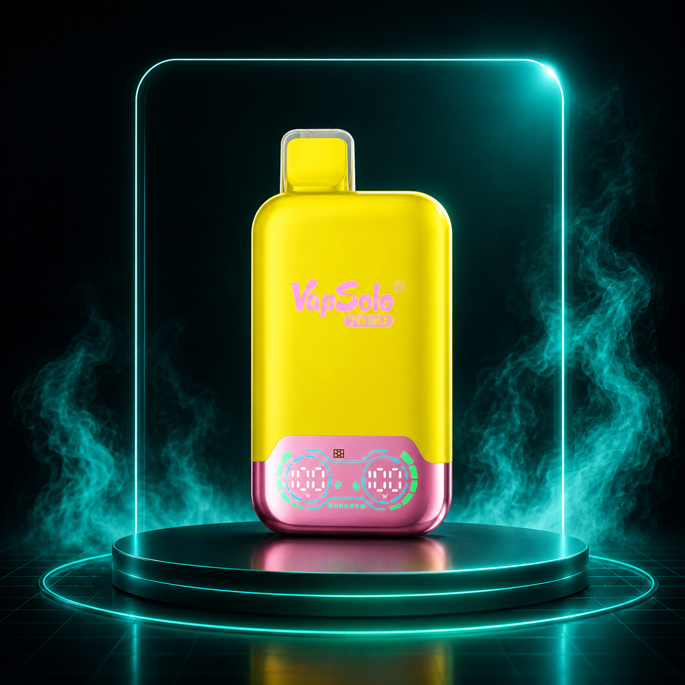
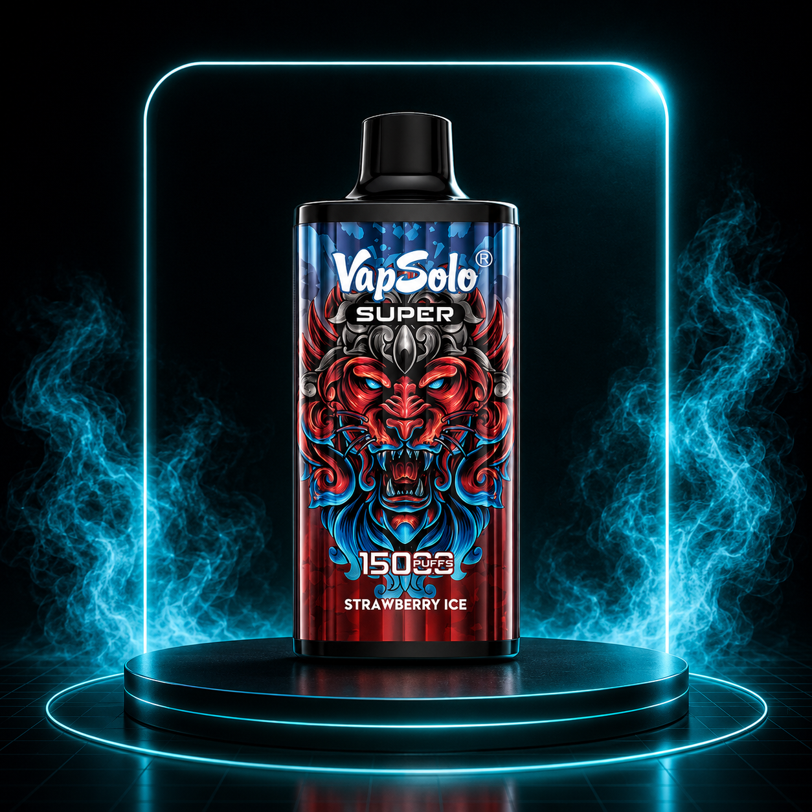
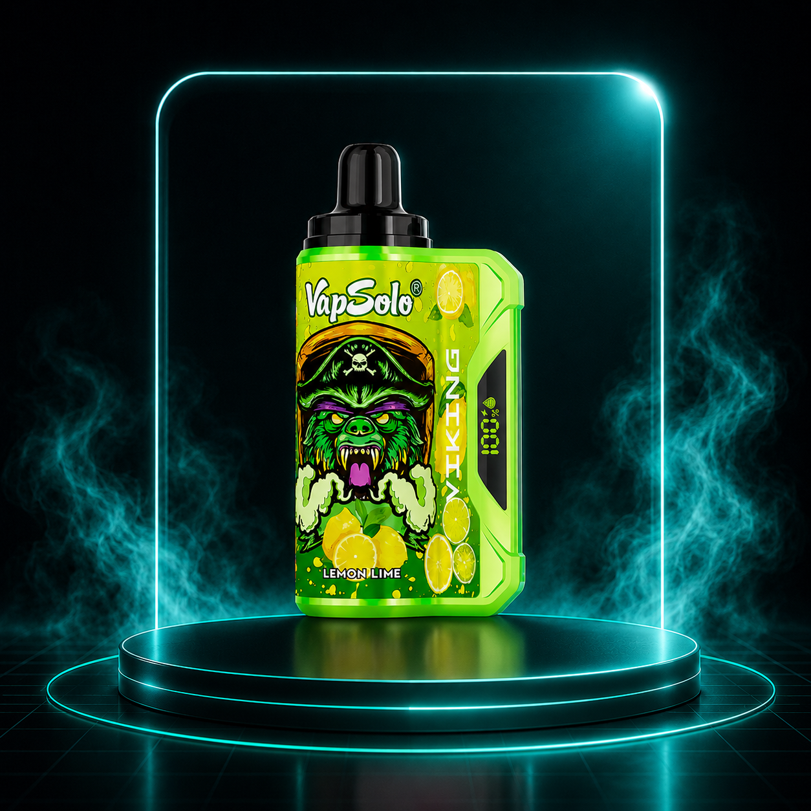
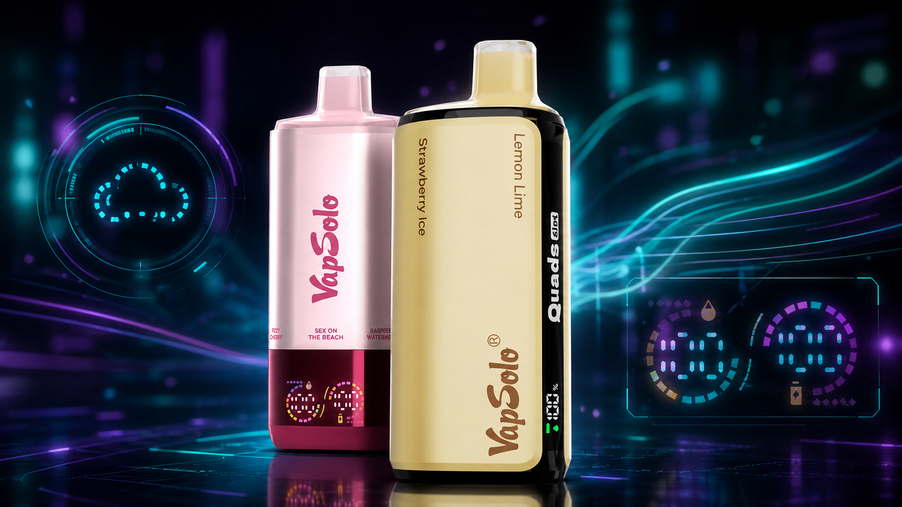

Compre já!Vape descartável para adultos em Portugal
Vapsolo Portugal: vapes descartáveis com alta autonomia
Modelos para adultos com milhares de tragadas, sabores populares e compra simples em Portugal.
At? 180.000 tragadas
Modelos 2–5% nicotina
Informação em PT-PT
Compra online simples
Compra apenas para maiores de 18 anos. Confirma sempre nicotina, sabores e ficha atual.
Gama Vapsolo
Escolhe o teu Vapsolo
Compara modelos por tragadas, puffs e formato. Confirma sempre a ficha atual antes de comprar.
Vapsolo Sixer 180K
COMPRE JÁVapsolo Quads 80K
COMPRE JÁ
Vapsolo Master 70K
COMPRE JÁ
Vapsolo Triple Pro 60K
COMPRE JÁ
Vapsolo Twins Pro 50K
COMPRE JÁ
VapeSolo Mars 50K
COMPRE JÁVapsolo King Pro 40K
COMPRE JÁ
Vapsolo Triple 30K
COMPRE JÁ
Vapsolo Twins 20K
COMPRE JÁ
VapeSolo Super 15K
COMPRE JÁ
VapeSolo Viking 12K
COMPRE JÁComparar
Comparação rápida dos modelos Vapsolo
Uma visão rápida para comparar autonomia (tragadas/puffs), perfil e melhor utilização. Confirme sempre os detalhes do produto antes de comprar.
| Modelo | Tragadas | Perfil | Melhor para |
|---|---|---|---|
| VapeSolo Sixer 180K | até 180.000 | Máxima autonomia | Quem procura a gama com mais tragadas indicadas |
| VapeSolo Quads 80K | até 80.000 | Máxima duração | Quem prioriza alta autonomia |
| VapeSolo Master 70K | até 70.000 | Marcante | Autonomia muito alta para uso prolongado |
| Vapsolo Triple Pro 60K | até 60.000 | Intenso | Formato de longa duração com foco em experiência |
| Vapsolo Twins Pro 50K | até 50.000 | Premium | Autonomia elevada e utilização versátil |
| Vapsolo Mars 50K | até 50.000 | Fresco | Quem procura um perfil de sabor mais leve |
| Vapsolo King Pro 40K | até 40.000 | Estável | Quem prefere consistência no uso |
| Vapsolo Triple 30K | até 30.000 | Equilibrado | Equilíbrio entre duração e praticidade |
| Vapsolo Twins 20K | até 20.000 | Versátil | Experimentar sabores e manter rotina simples |
| Vapsolo Super 15K | até 15.000 | Equilibrado | Uso diário com boa autonomia |
| VapeSolo Viking 12K | até 12.000 | Direto | Quem quer uma opção compacta e prática |
VapeSolo Sixer 180K
Tragadas: até 180.000
Perfil: Máxima autonomia
Melhor para: Quem procura a gama com mais tragadas indicadas
VapeSolo Quads 80K
Tragadas: até 80.000
Perfil: Máxima duração
Melhor para: Quem prioriza alta autonomia
Vapsolo Master 70K
Tragadas: até 70.000
Perfil: Marcante
Melhor para: Autonomia muito alta para uso prolongado
Vapsolo Triple Pro 60K
Tragadas: até 60.000
Perfil: Intenso
Melhor para: Formato de longa duração com foco em experiência
Vapsolo Twins Pro 50K
Tragadas: até 50.000
Perfil: Premium
Melhor para: Autonomia elevada e utilização versátil
Vapsolo Mars 50K
Tragadas: até 50.000
Perfil: Fresco
Melhor para: Quem procura um perfil de sabor mais leve
Vapsolo King Pro 40K
Tragadas: até 40.000
Perfil: Estável
Melhor para: Quem prefere consistência no uso
Vapsolo Triple 30K
Tragadas: até 30.000
Perfil: Equilibrado
Melhor para: Equilíbrio entre duração e praticidade
Vapsolo Twins 20K
Tragadas: até 20.000
Perfil: Versátil
Melhor para: Experimentar sabores e manter rotina simples
VapeSolo Super 15K
Tragadas: até 15.000
Perfil: Equilibrado
Melhor para: Uso diário com boa autonomia
VapeSolo Viking 12K
Tragadas: até 12.000
Perfil: Direto
Melhor para: Quem quer uma opção compacta e prática
Confiança
Opiniões sobre Vapsolo
Alguns comentários sobre autonomia, sabores e experiência de compra online.
“Gostei da facilidade em comparar modelos por tragadas e sabores antes de escolher.”
Marco, Lisboa“O guia ajudou-me a perceber melhor a diferença entre 12K, 50K, 80K e modelos de maior autonomia.”
Joana, Porto“A informação sobre nicotina e utilização responsável está clara e direta.”
Rui, Braga“Consegui chegar rapidamente aos modelos Vapsolo na VapePortugal.pt.”
Inês, CoimbraSecção informativa e ilustrativa. Confirma sempre a ficha atual do produto antes de comprar.
COMPRE JÁPortugal
Vapsolo em Portugal: informação para várias cidades
Este website ajuda utilizadores adultos a descobrir opções de vape Vapsolo em Portugal, sem indicar moradas físicas ou lojas locais não confirmadas.
Onde encontrar informação sobre Vapsolo em Portugal?
Se procura Vapsolo em Portugal, este guia ajuda a comparar modelos por tragadas, puffs, sabores de vape, autonomia e opções de nicotina. A disponibilidade pode variar por produto e cidade, por isso confirme sempre os detalhes antes de comprar.
Se procuras vape em Lisboa, Porto, Braga ou noutras zonas de Portugal, compara sempre a ficha atual do produto, número de tragadas, sabores disponíveis, nicotina indicada e condições de compra online. Ler guia de compra online.
Lisboa
Para utilizadores adultos em Lisboa, este guia ajuda a comparar vape descartável por autonomia indicada, tragadas e sabores de vape. A disponibilidade pode variar por variante e produto.
Porto
Para quem pesquisa vape portugal no Porto, a informação está organizada para comparar puffs (tragadas), opções de nicotina e estilo de utilização. Sem indicar moradas físicas não confirmadas.
Braga
Em Braga, utilize esta página para analisar modelos Vapsolo por autonomia estimada e perfil de sabor. Compare tragadas e confirme sempre os detalhes antes de comprar.
Coimbra
Para utilizadores em Coimbra, a comparação começa em pontos simples: puffs, tragadas e opções 2–5% nicotina. A duração real pode variar conforme a utilização.
Faro
Em Faro, quem procura um modelo descartável pode avaliar autonomia e sabores de vape com calma. Este guia apresenta informação útil sem prometer lojas locais.
Setúbal
Para Setúbal, a seleção ajuda a comparar formatos por tragadas e puffs, com linguagem PT-PT. Confirme a variante e utilize apenas se for maior de 18 anos.
Aveiro
Em Aveiro, compare opções de vape descartável por autonomia indicada (ex.: 20K, 50K ou 80K puffs) e sabores. A disponibilidade pode variar por cidade e momento.
Leiria
Para quem está em Leiria, este guia ajuda a comparar modelos VapeSolo por tragadas e estilo de utilização. Não indica moradas físicas não confirmadas; foca-se em informação.
Viseu
Em Viseu, a comparação por autonomia estimada é uma boa base: até 12.000, 15.000 ou 70.000 tragadas. Veja também o perfil de sabor e a nicotina indicada.
Évora
Para Évora, adultos que procuram cigarro eletrónico descartável podem consultar puffs e tragadas como referência. Confirme sempre a percentagem de nicotina antes da compra.
Guias VapeSolo
Guias VapeSolo: tragadas, puffs e compra online em Portugal
Aprende a comparar modelos por autonomia estimada, sabores de vape, nicotina e compra responsável em Portugal.

O que significa 80K puffs num vape descartável?
Entenda a relação entre 80K puffs, 80.000 tragadas e autonomia estimada antes de comparar modelos.
LER GUIA
Como escolher um vape descartável por número de tragadas
Compare gamas compactas, equilibradas e de máxima autonomia para uma compra mais informada.
LER GUIA
Sabores de vape mais procurados em Portugal
Veja perfis frutados, frescos, clássicos e doces sem inventar sabores específicos de produto.
LER GUIA
Vapes descartáveis com nicotina: o que verificar antes de comprar
Um guia para confirmar variante, percentagem de nicotina, ficha do produto e avisos para adultos.
LER GUIA
Vape 12K vs 80K: que modelo escolher?
Perceba quando faz sentido escolher uma opção compacta ou uma gama de maior duração estimada.
LER GUIA
Onde comprar vape online em Portugal
Critérios para comparar páginas, ficha do produto, tragadas, sabores, nicotina e condições atuais.
LER GUIAPerguntas frequentes
FAQ sobre Vapsolo, tragadas e vape descartável
O que é um vape descartável?
É um dispositivo de vaporização pensado para utilização simples, normalmente sem recarga de líquido. Deve ser usado apenas por adultos e com atenção à informação de nicotina.
O que significa 180K puffs?
180K puffs significa uma indicação aproximada de até 180.000 tragadas. A autonomia real pode variar conforme a frequência e intensidade de utilização.
Qual a diferença entre puffs e tragadas?
Puffs é o termo internacional para tragadas. Quando vê 15K, 80K ou 180K puffs, está a ver uma estimativa de tragadas indicada pelo modelo.
Os produtos Vapsolo têm nicotina?
Alguns modelos Vapsolo podem estar disponíveis em opções de nicotina 2–5%. Também pode aparecer escrito como VapeSolo em algumas pesquisas. Verifique sempre a variante concreta antes de comprar.
Este website é indicado para menores de 18 anos?
Não. A informação é reservada a maiores de 18 anos porque os produtos podem conter nicotina.
O que devo confirmar antes de comprar?
Confirme a variante, percentagem de nicotina, sabores disponíveis, autonomia estimada, condições de compra e se o produto é adequado apenas para maiores de 18 anos.
Uso responsável e informação legal
Produtos com nicotina destinam-se apenas a adultos. Não são adequados para menores, grávidas, pessoas que amamentam, não fumadores ou pessoas sensíveis à nicotina. Utilize responsavelmente e verifique sempre os detalhes do produto antes da compra. Este website não faz alegações médicas nem apresenta o vape como alternativa com benefícios.
Compra responsável 18+
Pronto para escolher o teu Vapsolo?
Confirma sempre a ficha atual, nicotina, sabores disponíveis e condições de compra na VapePortugal.pt.
COMPRE JÁ